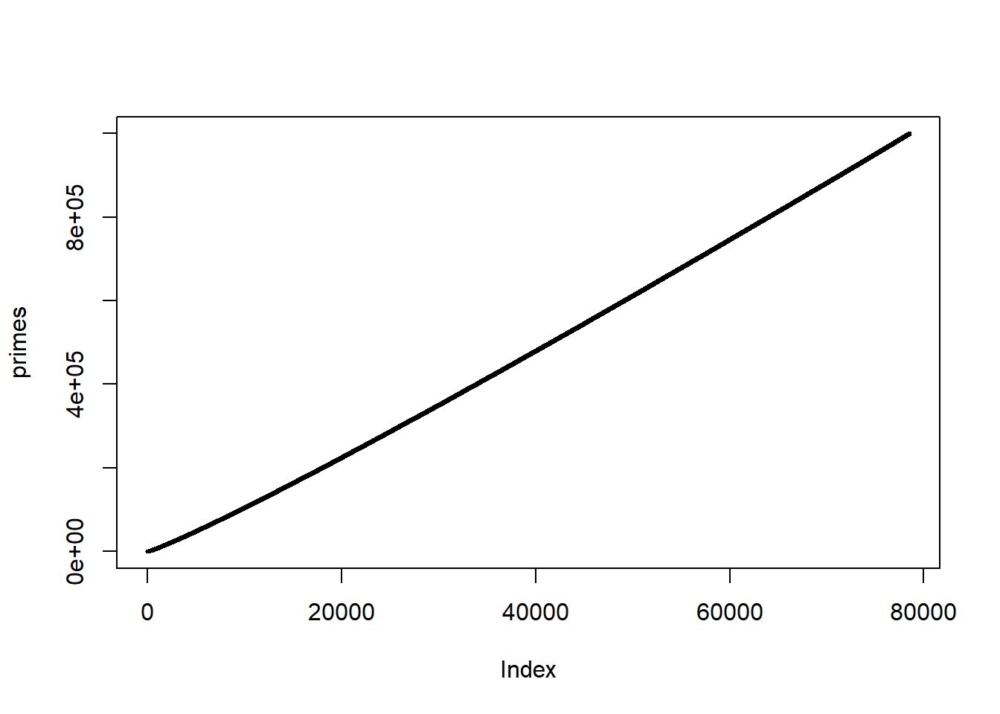

Chapter 5 Performance
Some resources used here or for further reading:
The people who say that “R is just always slow” are usually not great R programmers. It is true that writing inefficient R code is easy, yet writing efficient R code is also possible when you know what you’re doing. In this chapter, you will learn how to write R(cpp) code that is fast.
5.1 R’s memory management
Read more with this chapter of Advanced R.
5.1.1 Understanding binding basics
- It’s creating an object, a vector of values,
c(1, 2, 3). - And it’s binding that object to a name,
x.


There are now two names for the same object in memory.
5.1.2 Copy-on-modify
#> [1] 1 2 3
The object in memory is copied before being modified, so that x is not modified.
5.1.3 Copy-on-modify: what about inside functions?

#> x z2
#> [1,] 1 10
#> [2,] 2 2
#> [3,] 3 3The input parameter is not modified; you operate on a local copy of a = x in f2().


5.2 Early advice
5.2.1 NEVER GROW A VECTOR
Example computing the cumulative sums of a vector:
x <- rnorm(2e4) # Try also with n = 1e5
system.time({
current_sum <- 0
res <- c()
for (x_i in x) {
current_sum <- current_sum + x_i
res <- c(res, current_sum)
}
})#> user system elapsed
#> 0.50 0.44 0.94Here, at each iteration, you are reallocating a vector (of increasing size). Not only computations take time, memory allocations do too. This makes your code quadratic with the size of x (if you multiply the size of x by 2, you can expect the execution time to be multiplied by 4, for large sample sizes), whereas it should be only linear.
What happens is similar to if you would like to climb these stairs, you climb one stair, go to the bottom, then climb two stairs, go to bottom, climb three, and so on. That takes way more time than just climbing all stairs at once.

A good solution is to always pre-allocate your results (if you know the size):
system.time({
current_sum <- 0
res2 <- double(length(x))
for (i in seq_along(x)) {
current_sum <- current_sum + x[i]
res2[i] <- current_sum
}
})#> user system elapsed
#> 0 0 0#> [1] TRUEIf you don’t know the size of the results, you can store them in a list and merge them afterwards:
system.time({
current_sum <- 0
res3 <- list()
for (i in seq_along(x)) {
current_sum <- current_sum + x[i]
res3[[i]] <- current_sum
}
})#> user system elapsed
#> 0.01 0.00 0.02#> [1] TRUEWith recent versions of R (>= 3.4), you can efficiently grow a vector using
system.time({
current_sum <- 0
res4 <- c()
for (i in seq_along(x)) {
current_sum <- current_sum + x[i]
res4[i] <- current_sum
}
})#> user system elapsed
#> 0.00 0.00 0.01#> [1] TRUEAssigning to an element of a vector beyond the current length now over-allocates by a small fraction. The new vector is marked internally as growable, and the true length of the new vector is stored in the truelength field. This makes building up a vector result by assigning to the next element beyond the current length more efficient, though pre-allocating is still preferred. The implementation is subject to change and not intended to be used in packages at this time. (NEWS)
An even better solution would be to avoid the loop by using a vectorized function:
#> user system elapsed
#> 0 0 0#> [1] TRUE#> user system elapsed
#> 0.06 0.00 0.07As a second example, let us generate a matrix of uniform values (max changing for every column):
n <- 1e3
max <- 1:1000
system.time({
mat <- NULL
for (m in max) {
mat <- cbind(mat, runif(n, max = m))
}
})#> user system elapsed
#> 0.75 0.47 1.20#> [1] 0.9975021 1.9991156 2.9995030 3.9953425 4.9910392 5.9975332 6.9917640 7.9951094
#> [9] 8.9962233 9.9863959Instead, we should pre-allocate a matrix of the right size:
system.time({
mat3 <- matrix(0, n, length(max))
for (i in seq_along(max)) {
mat3[, i] <- runif(n, max = max[i])
}
})#> user system elapsed
#> 0.03 0.00 0.05#> [1] 0.9998532 1.9970766 2.9873757 3.9987882 4.9958037 5.9980721 6.9917538 7.9959909
#> [9] 8.9809019 9.9989166Or we could use a list instead. What is nice with using a list is that you don’t need to pre-allocate. Indeed, as opposed to atomic vectors, each element of a list is in different places in memory so that you don’t have to reallocate all the data when you add an element to a list.
system.time({
l <- list()
for (i in seq_along(max)) {
l[[i]] <- runif(n, max = max[i])
}
mat4 <- do.call("cbind", l)
})#> user system elapsed
#> 0.04 0.00 0.04#> [1] 0.9984987 1.9992867 2.9940454 3.9983232 4.9965907 5.9864294 6.9991839 7.9994760
#> [9] 8.9997866 9.9739188Instead of pre-allocating yourself, you can use sapply (or lapply and calling do.call() after, as previously done):
#> user system elapsed
#> 0.03 0.00 0.03#> [1] 0.9996463 1.9997847 2.9994215 3.9977109 4.9985609 5.9992687 6.9649379 7.9902897
#> [9] 8.9999981 9.9897547Don’t listen to people telling you that sapply() is a vectorized operation that is so much faster than loops. That’s false, and for-loops can actually be much faster than sapply() when using just-in-time (JIT) compilation. You can learn more with this blog post.
5.2.2 Use the right function
Often, in order to optimize your code, you can simply find the right function to do what you need to do.
For example, rowMeans(x) is much faster than apply(x, 1, mean).
Similarly, if you want more efficient functions that apply to rows and columns of matrices, you can check package {matrixStats}.
Another example is when reading large text files; in such cases, prefer using data.table::fread() rather than read.table().
Generally, packages that uses C/Rcpp are efficient.
5.2.3 Do not try to optimize everything
“Programmers waste enormous amounts of time thinking about, or worrying about, the speed of noncritical parts of their programs, and these attempts at efficiency actually have a strong negative impact when debugging and maintenance are considered.”
— Donald Knuth.
If you try to optimize each and every part of your code, you will end up losing a lot of time writing it, and it will probably make your code less readable.
R is great at prototyping quickly because you can write code in a concise and easy way. Start by doing just that. If performance matters, then profile your code to see which part of your code is taking too much time and optimize only this part!
Learn more on how to profile your code in RStudio in this article.
5.3 Vectorization
I call vectorized a function that takes vectors as arguments and operate on each element of these vectors in another (compiled) language (such as C, C++ and Fortran). Again, sapply() is not a vectorized function (cf. above).
Take this code:
N <- 10e3; x <- runif(N); y <- rnorm(N)
res <- double(length(x))
for (i in seq_along(x)) {
res[i] <- x[i] + y[i]
}As an interpreted language, for each iteration res[i] <- x[i] + y[i], R has to ask:
what is the type of
x[i]andy[i]?can I add these two types?
what is the type of
x[i] + y[i]then?can I store this result in
resor do I need to convert it?
These questions must be answered for each iteration, which takes time.
Some of this is alleviated by JIT compilation.
On the contrary, for vectorized functions, these questions must be answered only once, which saves a lot of time. Read more with Noam Ross’s blog post on vectorization.
What is the downside of using dplyr::rowwise()?
5.3.1 Exercise
Monte-Carlo integration (example from book Efficient R programming)
Suppose we wish to estimate the integral \(\int_0^1 x^2 dx\) using a Monte-Carlo method. Essentially, we throw darts (at random) and count the proportion of darts that fall below the curve (as in the following figure).

Naively implementing this Monte-Carlo algorithm in R would typically lead to something like:
monte_carlo <- function(N) {
hits <- 0
for (i in seq_len(N)) {
x <- runif(1)
y <- runif(1)
if (y < x^2) {
hits <- hits + 1
}
}
hits / N
}This takes a few seconds for N = 1e6:
#> user system elapsed
#> 0.52 0.30 0.83#> [1] 0.33386Your task: implement a vectorized function monte_carlo_vec for this problem (step by step):
#> user system elapsed
#> 0.01 0.00 0.01#> [1] 0.332955.4 Rcpp
See this presentation.
You have this data and this working code (a loop) that is slow
mydf <- readRDS(system.file("extdata/one-million.rds", package = "advr38pkg"))
QRA_3Dmatrix <- array(0, dim = c(max(mydf$ID), max(mydf$Volume), 2))
transform_energy <- function(x) {
1 - 1.358 / (1 + exp( (1000 * x - 129000) / 120300 ))
}
for (i in seq_len(nrow(mydf))) {
# Row corresponds to the ID class
row <- mydf$ID[i]
# Column corresponds to the volume class
column <- mydf$Volume[i]
# Number of events, initially zero, then increment
QRA_3Dmatrix[row, column, 1] <- QRA_3Dmatrix[row, column, 1] + 1
# Sum energy
QRA_3Dmatrix[row, column, 2] <- QRA_3Dmatrix[row, column, 2] +
transform_energy(mydf$Energy[i])
}Rewrite this for-loop with Rcpp.
You can also try to use {dplyr} for this problem.
5.5 Linear algebra
It is faster to use crossprod(X) and tcrossprod(X) instead of t(X) %*% X and X %*% t(X). Moreover, using A %*% (B %*% y) is faster than A %*% B %*% y, and solve(A, y) is faster than solve(A) %*% y.
Don’t re-implement linear algebra operations (such as matrix products) yourself. There exist some highly optimized libraries for this. If you want to use linear algebra in Rcpp, try RcppArmadillo or RcppEigen.
If you want to use some optimized multi-threaded linear library, you can try Microsoft R Open.
5.5.1 Exercises
Compute the Euclidean distances between each of row of X and each row of Y:
A naive implementation would be:
system.time({
dist <- matrix(NA_real_, nrow(X), nrow(Y))
for (i in seq_len(nrow(X))) {
for (j in seq_len(nrow(Y))) {
dist[i, j] <- sqrt(sum((Y[j, ] - X[i, ])^2))
}
}
})#> user system elapsed
#> 0.48 0.00 0.49Try first to remove one of the two loops using sweep() instead. Which loop should you choose to remove ideally?
A solution with sweep() can take
#> user system elapsed
#> 0.07 0.02 0.07Then, try to implement a fully vectorized solution based on this hint: \(\text{dist}(X_i, Y_j)^2 = (X_i - Y_j)^T (X_i - Y_j) = X_i^T X_i + Y_j^T Y_j - 2 X_i^T Y_j\). A faster solution using outer() and tcrossprod() takes
#> user system elapsed
#> 0.02 0.00 0.015.6 Algorithms & data structures
Sometimes, getting the right data structure (e.g. using a matrix instead of a data frame or integers instead of characters) can save you some computation time.
Is your algorithm doing some redundant computations making it e.g. quadratic instead of linear with respect to the dimension of your data?
See exercises (section 5.7) for some insights.
You can also find a detailed example in this blog post.
5.7 Exercises
What if you run some computations that take a lot of time, but forgot to save the results in some variable, what can you do?
Generate \(10^7\) (start with \(10^5\)) steps of the process described by the formula:\[X(0)=0\]\[X(t+1)=X(t)+Y(t)\] where \(Y(t)\) are independent random variables with the distribution \(N(0,1)\). Then, calculate the percentage of \(X(t)\) that are negative. You do not need to store all values of \(X\).
A naive implementation with a for-loop could be:
set.seed(1)
system.time({
N <- 1e5
x <- 0
count <- 0
for (i in seq_len(N)) {
y <- rnorm(1)
x <- x + y
if (x < 0) count <- count + 1
}
p <- count / N
})#> user system elapsed
#> 0.22 0.00 0.20#> [1] 0.88454Try to vectorize this after having written the value of X(0), X(1), X(2), and X(3). What would be the benefit of writing an Rcpp function over a simple vectorized R function?
#> user system elapsed
#> 0.02 0.00 0.01#> [1] 0.88454#> user system elapsed
#> 0.41 0.00 0.41#> [1] 0.3400444mat <- as.matrix(mtcars)
ind <- seq_len(nrow(mat))
mat_big <- mat[rep(ind, 1000), ] ## 1000 times bigger dataset
last_row <- mat_big[nrow(mat_big), ]Speed up these loops (vectorize):
system.time({
for (j in 1:ncol(mat_big)) {
for (i in 1:nrow(mat_big)) {
mat_big[i, j] <- 10 * mat_big[i, j] * last_row[j]
}
}
})#> user system elapsed
#> 0.43 0.00 0.42Why colSums() on a whole matrix is faster than on only half of it?
m0 <- matrix(rnorm(1e6), 1e3, 1e3)
microbenchmark::microbenchmark(
colSums(m0[, 1:500]),
colSums(m0)
)#> Unit: microseconds
#> expr min lq mean median uq max neval
#> colSums(m0[, 1:500]) 1745.6 1772.0 2093.224 1800.1 1879.1 9821.6 100
#> colSums(m0) 751.5 808.3 854.007 827.4 856.4 1237.0 100Try to speed up this code by vectorizing it first, and/or by precomputing. Then, recode it in Rcpp and benchmark all the solutions you came up with.
M <- 50
step1 <- runif(M)
A <- rnorm(M)
N <- 1e4
tau <- matrix(0, N + 1, M)
tau[1, ] <- A
for (j in 1:M) {
for (i in 2:nrow(tau)) {
tau[i, j] <- tau[i - 1, j] + step1[j] * 1.0025^(i - 2)
}
} Make a fast function that counts the number of elements between a sequence of breaks. Can you do it in base R? Try also implementing it in Rcpp. How can you implement a solution whose computation time doesn’t depend on the number of breaks? [Which are the special cases that you should consider?]
x <- sample(10, size = 1e4, replace = TRUE)
breaks <- c(1, 3, 8.5, 9.5, 10)
table(cut(x, breaks), exclude = NULL) # does not include first break (1)#>
#> (1,3] (3,8.5] (8.5,9.5] (9.5,10] <NA>
#> 2006 4970 1027 944 1053#> [1] 3059 4970 1027 944#> [1] 2006 4970 1027 944#> [1] 2006 4970 1027 944microbenchmark::microbenchmark(
table(cut(x, breaks)),
hist(x, breaks, plot = FALSE)$counts,
advr38pkg::count_by_breaks(x, breaks, use_outer = TRUE),
advr38pkg::count_by_breaks(x, breaks, use_outer = FALSE),
advr38pkg::count_by_breaks_fast(x, breaks)
)#> Unit: microseconds
#> expr min lq mean median
#> table(cut(x, breaks)) 822.4 1021.00 1240.184 1050.00
#> hist(x, breaks, plot = FALSE)$counts 403.0 417.60 450.863 429.35
#> advr38pkg::count_by_breaks(x, breaks, use_outer = TRUE) 372.5 407.05 438.455 426.05
#> advr38pkg::count_by_breaks(x, breaks, use_outer = FALSE) 194.8 238.70 255.801 244.30
#> advr38pkg::count_by_breaks_fast(x, breaks) 192.0 207.95 225.782 213.65
#> uq max neval
#> 1107.35 17400.3 100
#> 463.75 861.3 100
#> 452.60 715.3 100
#> 259.25 545.2 100
#> 239.20 427.6 100x2 <- sample(100, size = 1e5, replace = TRUE)
breaks2 <- breaks * 10
breaks3 <- seq(0, 100, length.out = 100)
microbenchmark::microbenchmark(
advr38pkg::count_by_breaks(x2, breaks2),
advr38pkg::count_by_breaks_fast(x2, breaks2),
advr38pkg::count_by_breaks(x2, breaks3),
advr38pkg::count_by_breaks_fast(x2, breaks3)
)#> Unit: milliseconds
#> expr min lq mean median
#> advr38pkg::count_by_breaks(x2, breaks2) 1.3822 1.70710 1.923553 1.73250
#> advr38pkg::count_by_breaks_fast(x2, breaks2) 1.1289 1.42025 1.788228 1.46125
#> advr38pkg::count_by_breaks(x2, breaks3) 28.0123 34.35490 38.918754 35.25755
#> advr38pkg::count_by_breaks_fast(x2, breaks3) 1.1495 1.43735 2.108812 1.49765
#> uq max neval
#> 1.85205 16.4024 100
#> 1.52795 16.3027 100
#> 48.05260 58.0801 100
#> 1.61585 17.1115 100An R user wants to implement some sampling on a sparse matrix and provides this working code:
N <- 2000
system.time({
m <- Matrix::Matrix(0, nrow = N, ncol = N)
for (j in 1:N) {
cols <- sample((1:N)[-j], 2) # pick 2 columns that are not j
m[j, cols] <- 1
}
})#> user system elapsed
#> 1.62 0.08 1.72This code is slow; can you find two major reasons why?
How can you more efficiently assign 1s? A faster solution would take:
#> user system elapsed
#> 0.05 0.03 0.08Can you use sampling with replacement (to avoid unnecessarily allocating memory) in this example? A faster solution would take:
#> user system elapsed
#> 0.02 0.00 0.02It would be even faster using Rcpp (cf. this SO answer).
Make a fast function that returns all prime numbers up to a number N.
#> user system elapsed
#> 0.05 0.00 0.05
5.8 Parallel computing
I basically always use foreach and recommend to do so. See my guide to parallelism in R with foreach.
Just remember to optimize your code before trying to parallelize it.
Try to parallelize some of your best solutions for the previous exercises.